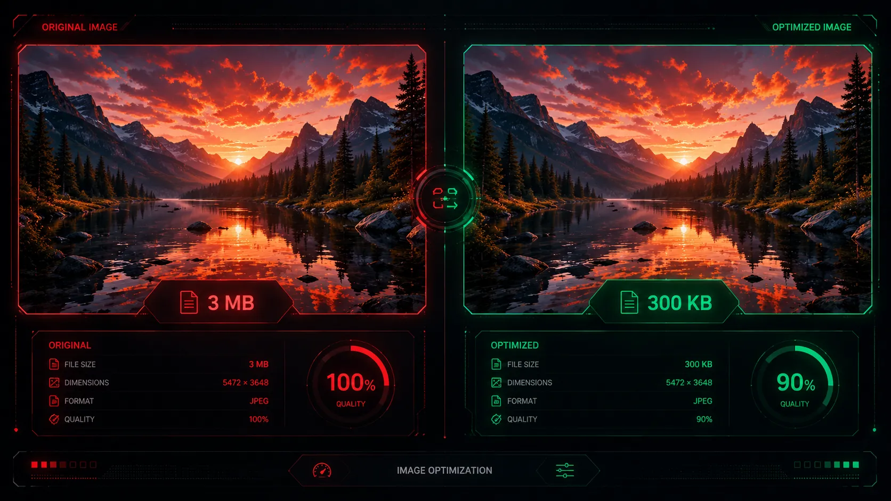
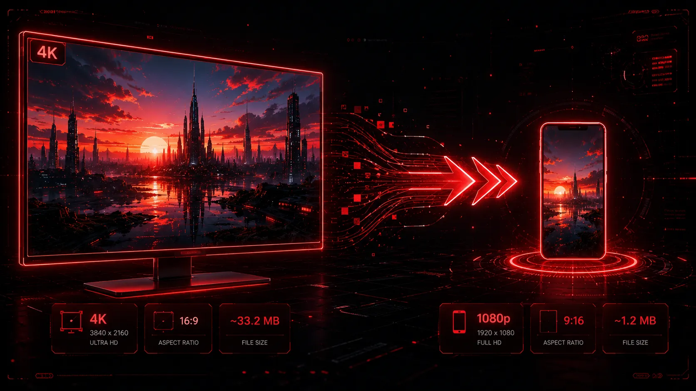

To the average internet user, it sounds like pure magic: taking a massive 3MB high-resolution photograph and shrinking it down to a tiny 300KB file, all without it looking blurry, pixelated, or distorted. In the professional web design world, this "magic" is actually a careful combination of modern compression algorithms and a deep understanding of human visual perception.
If you run a blog, a portfolio, or an e-commerce store, learning how to correctly reduce your image weight is a mandatory skill. Heavy images destroy your website's load times, resulting in frustrated users and poor Google search rankings. Here is the professional, step-by-step strategy for shedding megabytes off your media library.

Understanding Visual Perception vs. File Size
Before we dive into the technical steps, it is important to understand how image compression actually works. Modern compression tools do not just randomly delete parts of your image. Instead, they analyze the pixels and remove microscopic color variations that the human eye physically cannot perceive.
"Lossy compression is not about ruining an image; it is about efficiently representing the same visual data using mathematics rather than brute-force pixel counting."

The 3-Step Process to Perfect Optimization
- Change the File Format to WebP The single most effective way to reduce file size without losing visible quality is to switch from older, inefficient formats (like heavy JPEGs or PNGs) to next-generation formats like WebP. Because WebP uses advanced predictive coding, it can represent the exact same image data using up to 34% fewer bytes. You can use our free WebP converter to handle this transition instantly. Just uploading a JPG and downloading it as a WebP often solves the size problem entirely.
- Proper Dimension Resizing Many beginners make the critical mistake of uploading a 4000x3000 pixel image directly from their digital camera onto their website, only to display it in a tiny 400x300 pixel box. The user's browser still has to download the massive original file just to shrink it down visually. Always resize the physical dimensions (width and height) of your image in a basic editor to match where it will be displayed on your site before you compress it. This alone can remove 80% of the file weight.
- Finding the Compression "Sweet Spot" When using a professional image optimizer like Webp Moder by Shekh, you are presented with a live quality slider. A setting of 100% means zero compression. Dropping the slider to the 75% - 85% range removes unnoticeable data. You maintain the "perceived" high quality while drastically dropping the megabytes. Play with the live preview to find the lowest possible percentage before visual artifacts appear.

Compress Your Images Instantly
Use our interactive quality slider to find your perfect balance of minimum file size and maximum visual perfection.
⚡ Open Image CompressorFrequently Asked Questions
Does reducing image size affect SEO?
Yes, absolutely! But in a positive way. Search engines like Google prioritize fast-loading websites. By reducing your image sizes, your web pages load much faster, which directly improves your Core Web Vitals (specifically the LCP metric) and boosts your SEO rankings.
What is the difference between lossy and lossless compression?
Lossless compression reduces file size without losing any data at all (perfect quality, but larger files). Lossy compression permanently removes some hidden data to achieve massive file size reductions (great for web, but technically lower quality). WebP supports both methods.
Can I resize an image after converting it to WebP?
While possible, it is highly recommended to resize the physical dimensions (width and height) of your image first, and then run it through our converter as the final step in your optimization workflow.
Final Thoughts
A fast website is the foundation of a successful digital presence. By understanding how to properly resize your dimensions and utilizing modern formats through tools like Webp Moder by Shekh, you ensure that your visitors get a beautiful, high-resolution experience without the frustrating loading times. Start optimizing your media library today and watch your website metrics soar.